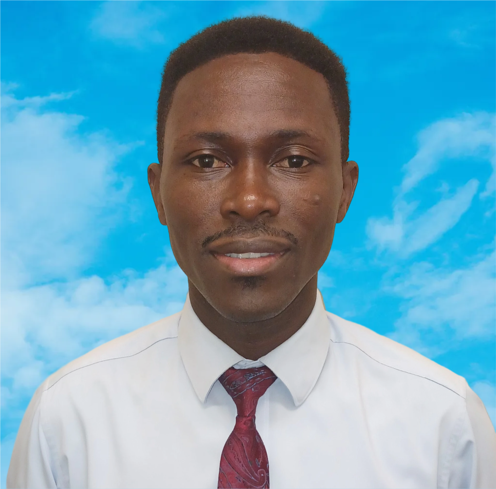

Home
Rafting Website
Dennis Anokye | WDD 130

My name is Dennis Anokye, I was born to a loving parent in a remote village in the Ashanti Region of Ghana called Dompoase. I currently live and work in Accra. Some of my cherished hobbies include reading, singing, writing my own songs, listening to inspiring audios such as conference talks, podcast, music etc, with interests in divers research topics such as nature, culture, arts, creativity, and environmental conservation. I continue to seek knowledge, inspire change, and embrace the values that shapes life, standing firm in my faith and passions. I have passion in developing an app for farmers in remote areas to enable then have access to information and resources. So I am currently studying Software Development in BYU-Idaho to hone my skills.
Accra

Accra, the capital city of Ghana, is a vibrant and rapidly growing metropolis that blends rich tradition with modern progress. Located along the Gulf of Guinea. The city is a cultural hub, home to historic landmarks, colorful markets, music, dance, and festivals that reflect the diverse ethnic groups, especially the Ga people. Accra also boasts top educational institutions such as the University of Ghana, Ashesi University, and several international schools. With some hospitality homes like Movenpic Ambassador Hotel, Marriott Hotel, Holiday Inn, etc. Accra has a stable political climate, improving infrastructure, tech innovation hubs, and growing middle class, the modern class international airport is also located here in Accra, making it an attractive destination for foreign investors seeking opportunities in sectors like real estate, fintech, education, and tourism.